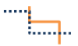
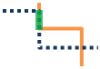
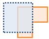
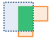

Lagen overlappen

Lagen overlappen combineert twee of meer lagen in één enkele laag. Bij Overlap lijkt het alsof u door een stapel kaarten kijkt en één kaart maakt die alle informatie bevat die in de stapel is gevonden. Overlap is meer dan het samenvoegen van lijnwerk. Alle attributen van de objecten die deel uitmaken van de overlap, worden overgedragen naar het definitieve product. Overlap wordt gebruikt om een antwoord te bieden op een van de basisvragen in de geografie: 'Wat ligt boven op wat?'. Hier volgen enkele voorbeelden:
- Welke percelen bevinden zich binnen het 100-jarige overstromingsgebied? (Binnen betekent hierbij hetzelfde als boven op.)
- Welk bodemgebruik ligt boven op welk bodemtype?
- Welke bronnen bevinden zich binnen verlaten militaire basissen?
Als Huidige omvang van de kaart gebruiken is aangevinkt, worden alleen de objecten in de invoer- en overlaplagen bovenop geplaatst die binnen de huidige omvang van de kaart zichtbaar zijn. Als deze optie niet is aangevinkt, worden alle objecten in zowel de invoerlaag als de overlaylaag bovenop geplaatst, zelfs als deze zich buiten de huidige omvang van de kaart bevinden.
Kies invoerlaag
De punt-, lijn- of vlakkenlaag die bovenop worden geplaatst.
Naast het kiezen van een laag uit uw kaart, kunt u Analyselaag Levende Atlas kiezen of Analyselaag kiezen selecteren onderaan de vervolgkeuzelijst. Er wordt een galerij geopend met een verzameling lagen die handig zijn voor veel analyses.
Kies overlap-laag
De laag om bovenop de inputlaag te plaatsen.
Naast het kiezen van een laag van uw kaart, kunt u kiezen voor Analyselaag kiezen onderaan de keuzelijst om in uw inhoud te zoeken naar een big data file share-dataset of objectlaag.
Kies overlapmethode
De overlapmethode bepaalt hoe de invoerlaag en de overlaplaag worden gecombineerd.
- Kruisen—Het resultaat bevat alleen die objecten of delen van objecten in de overlaplaag die overlappen met objecten in de invoerlaag. Bij kruisende lijn- of gebiedsobjecten hebt u de optie om het type objecten aan te geven dat u als uitvoer wilt.
Punten met punten
Lijnen met lijnen


Gebieden met gebieden


- Wissen—Het resultaat bevat alleen die objecten of delen van objecten in de overlaylaag die overlappen met de gebieden in de invoerlaag. De overlaylaag kan gebieds-, lijn- of puntobjecten bevatten.
Resultaat laagnaam
De naam van de laag die in Mijn Content wordt gemaakt en aan de kaart wordt toegevoegd. Deze zal hetzelfde objecttype (gebieden, lijnen of punten) hebben als de overlaplagen. De standaardnaam is gebaseerd op de overlapmethode en de naam van de invoerlaag. Als de laag al bestaat, wordt u gevraagd een nieuwe naam te geven.
Als u in de vervolgkeuzelijst Resultaat opslaan gebruikt, kunt u de naam opgeven van een map in Mijn Content waarin het resultaat wordt opgeslagen.